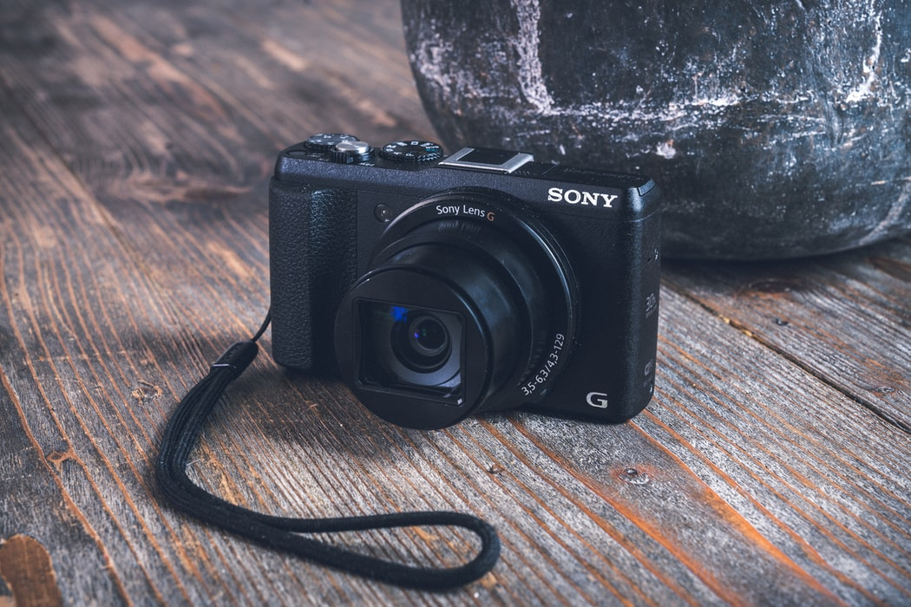
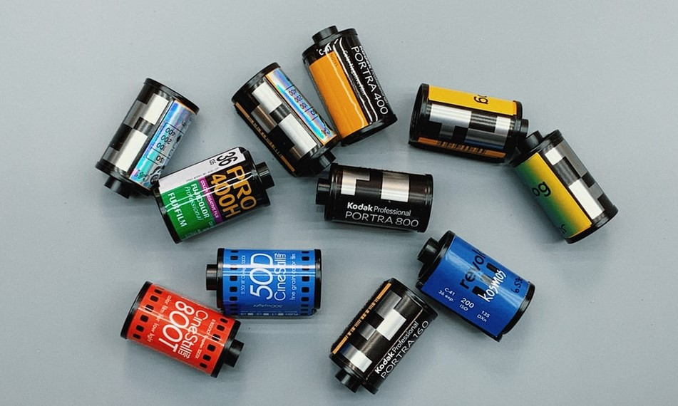
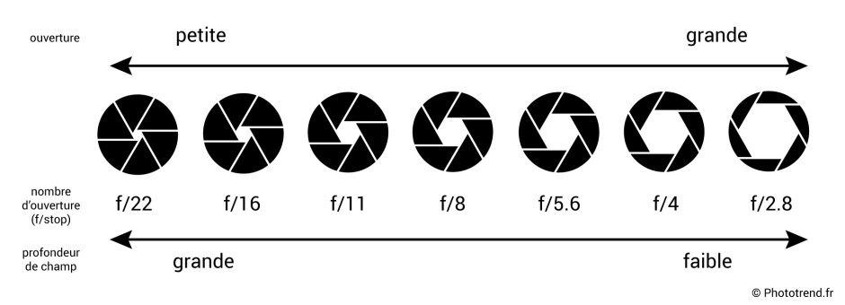
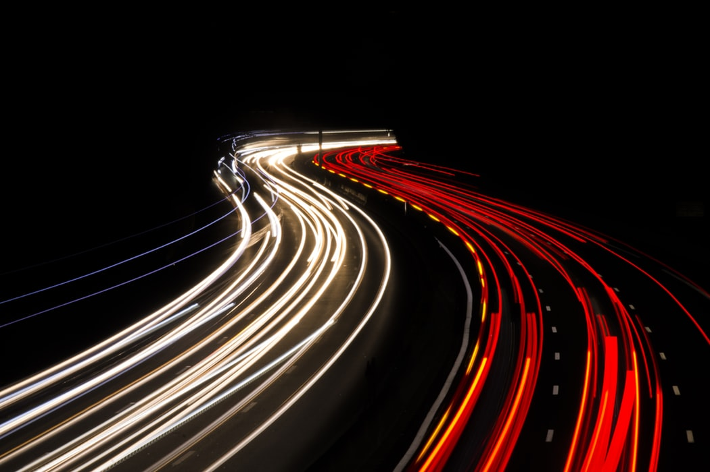
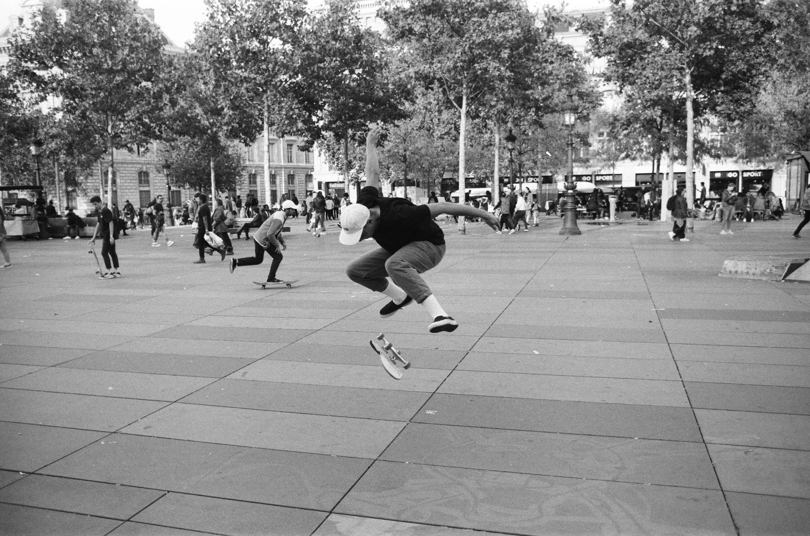
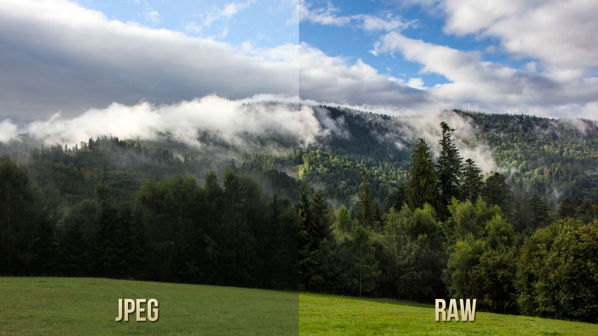

La photographie numérique
Différents concepts à propos de la photographie numérique
Avec des capacités toujours plus puissantes au fil du temps, la photographie numérique représente la grande majorité des outils photographiques actuels. Avec une multitude de produits pour tous les prix, la photo numérique plait par sa facilité de prise en main et la facilité de s'améliorer avec ce genre d'appareils.
Les différents appareils numériques
Les appareils compacts représentent l'entrée de gamme des appareils photos numériques. Avec un prix compris entre 90 et 500 euros, ils sont prévu pour une utilisation basique. Peu de réglages, un objectif fixe (impossibilité de changer d'objectif), une visée souvent via l'écran donc compliqué en cas d'ensoleillement. Les compacts sont généralement choisis pour des voyages, leur taille étant minimes permet un transport facile. Pour une liste des meilleurs appareils compact sur le marché cliquez ici. En appareil numérique se retrouvent également les appareils Bridge et Réflex. Tous les deux plus imposants qu'un compact ils permettent une meilleure prise en main. De plus ils ont plus de possibilitées de réglages manuels en comparaison à un compact qui est souvent uniquement automatique. La différence entre un bridge et un réflex se joue au niveau de la qualité du viseur, de la force du processeur évidemment et aussi au niveau des objectifs. Il est possible de changer l'objectif d'un réflex mais pas d'un bridge. Enfin les apparails numériques appelés hybrides sont des appareils compacts mais qui ont comme pour le réflex la possibilité de changer d'objectifs. Plus d'informations sur tous ces appareils ici.
L'exposition
Les ISO
 L'ouverture, qui est représentée par un chiffre, permet de jouer sur la quantitée de lumière qui rentre dans l'objectif. L'ouverture correspond à l'ouverture du diaphragme. Comme expliqué ci-contre, plus le chiffre est petit plus l'ouverture est grande et plus le chiffre est grand plus l'ouverture est petite. Le chiffre correspond enfait à un dénominateur, c'est pourquoi la relation est négative. Une ouverture de 2.8 permet d'avoir plus de lumière, une ouverture de 22 à l'inverse laissera moins de lumière rentrer. L'ouverture joue également sur la profondeur de champs, plus le chiffre est bas plus la profondeur est basse. Une profondeur basse fait ressortir le sujet par rapport à l'arrière plan. Pour plus d'informations sur l'ouverture cliquez ici .
L'ouverture
L'ouverture, qui est représentée par un chiffre, permet de jouer sur la quantitée de lumière qui rentre dans l'objectif. L'ouverture correspond à l'ouverture du diaphragme. Comme expliqué ci-contre, plus le chiffre est petit plus l'ouverture est grande et plus le chiffre est grand plus l'ouverture est petite. Le chiffre correspond enfait à un dénominateur, c'est pourquoi la relation est négative. Une ouverture de 2.8 permet d'avoir plus de lumière, une ouverture de 22 à l'inverse laissera moins de lumière rentrer. L'ouverture joue également sur la profondeur de champs, plus le chiffre est bas plus la profondeur est basse. Une profondeur basse fait ressortir le sujet par rapport à l'arrière plan. Pour plus d'informations sur l'ouverture cliquez ici .
La vitesse d'obturation
La vitesse d'obturation est le dernier point à prendre en compte pour régler l'exposition d'une photo. Comme pour l'ouverture elle est définie par une fraction qui donne la durée en secondes durant laquelle l'obturateur va s'ouvrir lorsuqe vous appuyez sur le déclencheur. Plus le dénominateur est haut, 1/1000ème par exemple, plus l'obturateur s'ouvre et se referme rapidement. Cette situation laisse moins entrer de lumière mais supprime les flous de mouvements. Une vitesse basse, 3 secondes par exemple, laisse entrer beaucoup de lumière mais chaque mouvement apparaitra flou. Plus d'informations ici .

Sur la photo à gauche, l'ouverture est de 2 secondes. Le mouvement des voitures est pris en compte, et seuls les phares apparaissent sur le rendu final. Sur celle de droite, l'ouverture est 1/1000 secondes, le skateboard est net.
Le type de fichier
 Certains appareils photo numérique laissent la possibilité de choisir si l'on préfère enregistrer un fichier en .jpeg ou en .raw. Il faut savoir qu'un fichier raw sera beaucoup plu volumineux qu'un jpeg et qu'il est donc nécessaire d'avoir une carte mémoire performante.Un fichier raw est un fichier qui n'a subit aucune retouche par l'appareil. Il supportera donc mieux les retouches en post-production et aura une meilleur qualité qu'un fichier jpeg qui est retouché par l'appareil.Plus d'infos sur quel type de fichier choisirici.